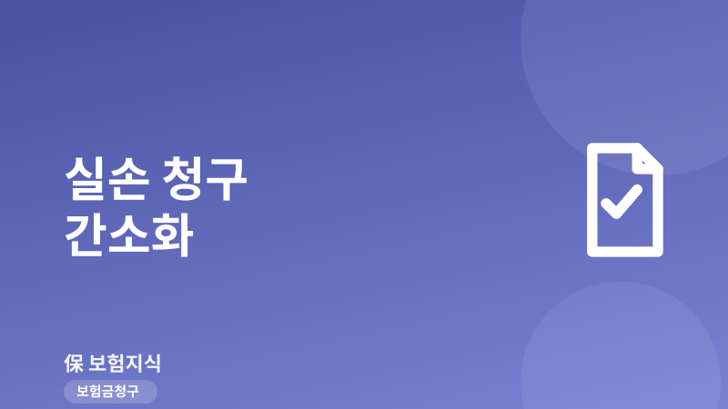
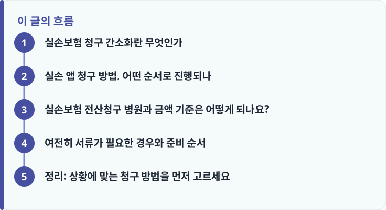

실손보험 청구 간소화는 환자가 종이서류를 떼는 대신 병원이 진료비 자료를 보험사로 전산 전송해 주는 제도입니다.
참여 병원인지, 정액담보가 아닌 실손 담보인지, 청구 금액이 소액 기준에 드는지에 따라 방법이 달라집니다.
모든 병·의원이 전산청구에 참여하는 것은 아니며, 진단서가 필요한 청구는 여전히 서류를 준비해야 합니다.
실손보험 청구 간소화란 무엇인가
실손보험 청구 간소화는 가입자가 병원에서 진료비 영수증과 세부내역서를 직접 떼어 보험사에 제출하던 과정을, 병원이 진료 자료를 전자적으로 보험사에 곧바로 전송하도록 바꾼 제도입니다. 환자는 청구를 요청하기만 하면 되고, 종이서류를 스캔하거나 우편으로 보내는 번거로움이 줄어듭니다. 실손보험이 어떤 구조로 자기부담금을 계산하는지 아직 낯설다면 실손보험 보장 구조와 자기부담금의 기본 개념부터 훑어 보면 이해가 빠릅니다.
과거에는 소액 진료라도 서류 발급 비용과 방문 시간이 아까워 청구를 아예 포기하는 경우가 많았습니다. 몇천 원짜리 통원 진료비를 돌려받으려고 다시 병원을 찾기는 부담스러웠기 때문입니다. 전산 전송이 자리 잡으면 이런 ‘청구 포기’가 줄어들어, 그동안 놓치던 소액 보험금까지 챙길 수 있다는 점이 가장 큰 변화입니다.
실손 앱 청구 방법, 어떤 순서로 진행되나
전산청구는 보통 전용 앱이나 웹을 통해 진행됩니다. 대표적으로 보험개발원이 운영하는 실손24와 같은 창구에서 본인 인증을 하고, 진료받은 병원과 날짜를 선택해 청구를 요청하면 병원이 해당 진료 자료를 보험사로 전송하는 흐름입니다. 가입자는 보험사마다 서류 양식을 따로 챙길 필요 없이 한곳에서 여러 건을 접수할 수 있습니다.
여기서 헷갈리기 쉬운 것이 ‘전산청구’와 ‘소액 간편청구’의 차이입니다. 간편청구는 예전부터 각 보험사 앱에서 운영해 온 방식으로, 가입자가 직접 영수증과 세부내역서를 사진으로 찍어 올려 청구하는 것입니다. 반면 전산청구는 병원이 자료를 직접 보내 주므로 사진 촬영 단계 자체가 사라집니다. 서류를 사진으로 올리는 방식이 궁금하다면 실손보험 청구 시 급여·비급여 자기부담금을 계산하는 방법을 함께 참고하면 두 방식을 비교하기 쉽습니다.

실손보험 전산청구 병원과 금액 기준은 어떻게 되나요?
가장 많이 받는 질문이 ‘내가 다닌 병원도 전산청구가 되나요?’입니다. 제도는 규모가 큰 병원급 의료기관부터 단계적으로 적용된 뒤 동네 의원과 약국으로 넓혀 가는 방식으로 진행되어 왔습니다. 따라서 같은 실손보험이라도 방문한 곳이 참여 기관인지에 따라 전산청구 가능 여부가 갈립니다. 청구 앱에서 병원을 검색했을 때 목록에 뜨는지 확인하는 것이 가장 확실합니다.
금액 기준도 함께 봐야 합니다. 실손보험은 청구액이 크지 않으면 진단서 같은 고비용 서류 없이 영수증과 세부내역서만으로 받아 주는 소액청구 간소화를 운영하는데, 흔한 기준이 1회 100만 원 이하입니다. 전산청구는 이 소액 통원·입원 진료에서 특히 유용합니다. 반대로 고액이거나 진단 확정이 필요한 청구는 전산 전송만으로 끝나지 않고 추가 서류가 요구될 수 있습니다. 청구 절차 전체 그림이 필요하다면 보험금 청구 접수부터 지급까지의 전체 절차를 먼저 읽어 두면 좋습니다.
작성·검수 기준
이 글은 특정 앱이나 보험사를 권유하기 위한 것이 아니라, 실손보험 청구 간소화의 개념과 전산청구·간편청구의 차이를 일반적인 기준에서 정리하기 위해 작성했습니다. 전산청구 대상 병원의 범위, 참여 시점, 소액청구 기준 금액은 제도 시행 단계와 보험사·상품에 따라 달라질 수 있습니다.
실제 청구 가능 여부와 제출 서류는 본인 증권의 약관과 상품설명서, 그리고 보험금 청구에 필요한 서류를 담보별로 정리한 안내를 확인하고, 청구 전 보험사 앱이나 콜센터로 다시 점검하는 것이 가장 정확합니다.
여전히 서류가 필요한 경우와 준비 순서
전산청구가 넓어져도 종이서류가 완전히 사라지는 것은 아닙니다. 방문한 병원이 아직 전산청구에 참여하지 않거나, 암·수술 진단비처럼 정액 담보를 청구할 때는 진단서·수술확인서 같은 의사 서류가 여전히 필요합니다. 상황별로 무엇을 챙겨야 하는지는 통원·입원·수술별로 청구 서류를 챙기는 체크리스트에서 정리해 두면 재방문을 줄일 수 있습니다. 아래 순서로 접근하면 헛걸음을 아낄 수 있습니다.
- 청구할 담보가 실손(통원·입원)인지, 진단·수술 정액인지 먼저 구분합니다.
- 방문한 병원이 전산청구 참여 기관인지 청구 앱에서 검색해 확인합니다.
- 참여 기관이면 앱에서 본인 인증 후 병원·진료일을 선택해 청구를 요청합니다.
- 참여하지 않는 곳이면 영수증·세부내역서를 떼어 간편청구로 접수합니다.
- 진단서가 필요한 정액 청구는 원본 서류를 챙겨 별도로 제출합니다.
정리: 상황에 맞는 청구 방법을 먼저 고르세요
실손보험 청구 간소화의 핵심은 ‘무조건 앱이 빠르다’가 아니라, 내 상황에 맞는 경로를 고르는 데 있습니다. 참여 병원의 소액 통원이라면 전산청구가 가장 간편하고, 그렇지 않다면 사진을 올리는 간편청구가, 진단비 같은 정액 청구라면 원본 서류 준비가 필요합니다. 이 세 갈래만 기억하면 청구를 미루다 소멸시효(원칙적으로 3년)를 넘기는 실수를 줄일 수 있습니다.
다른 보험 정보 글이 궁금하다면 보험지식 블로그에서 이어 읽어 보세요. 가입 전에는 반드시 약관과 상품설명서를 확인하는 것이 가장 안전한 방법입니다.